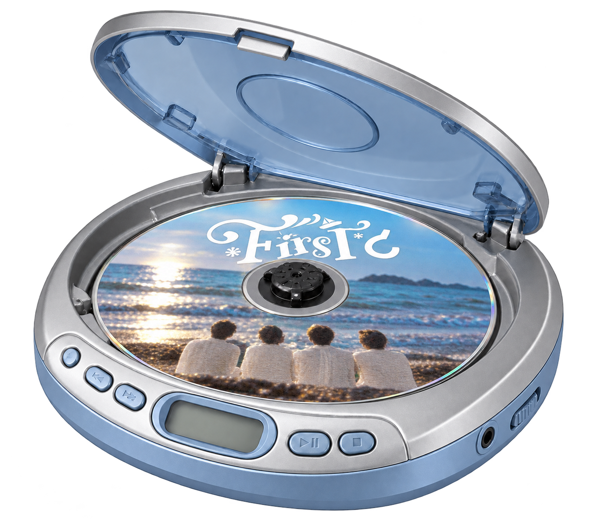
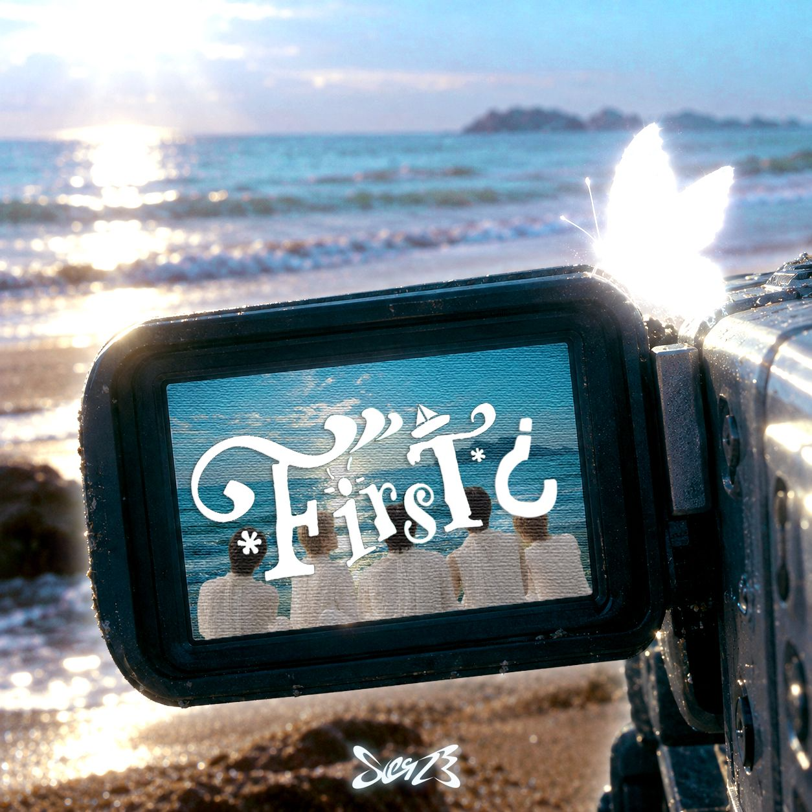
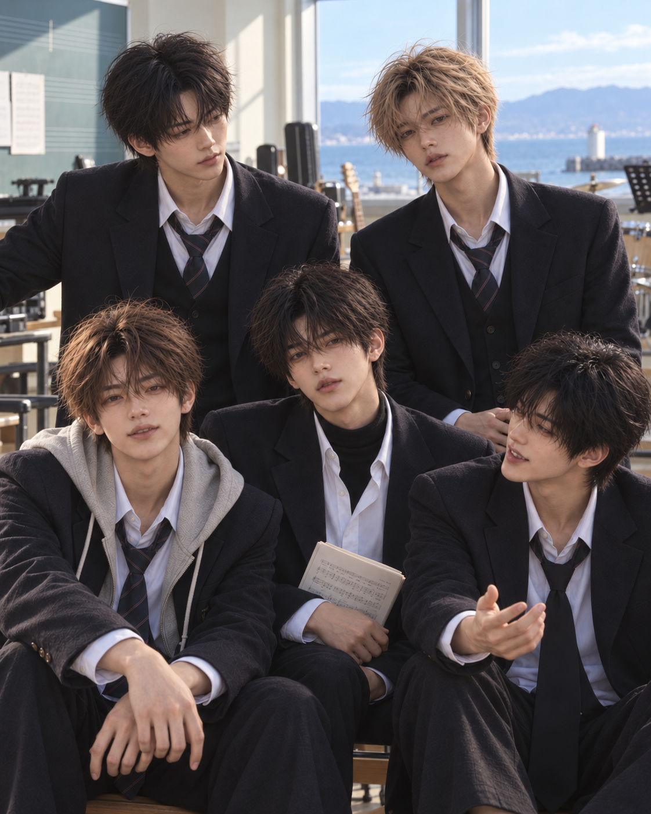
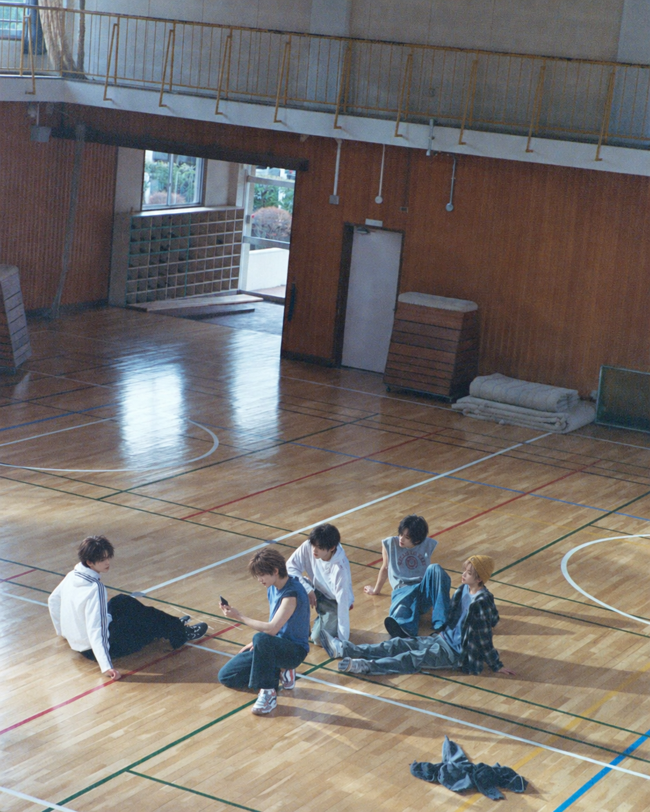
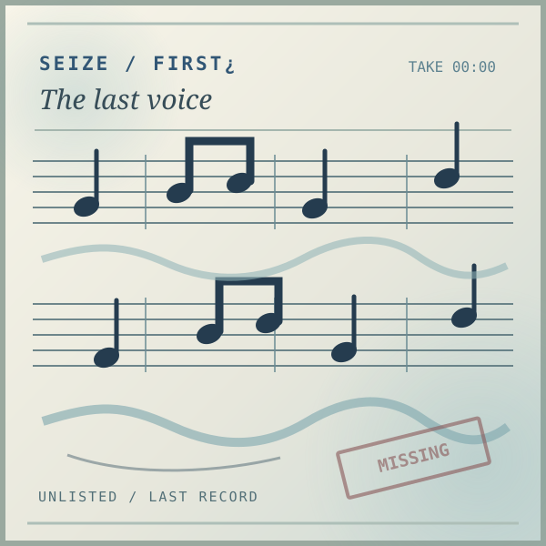
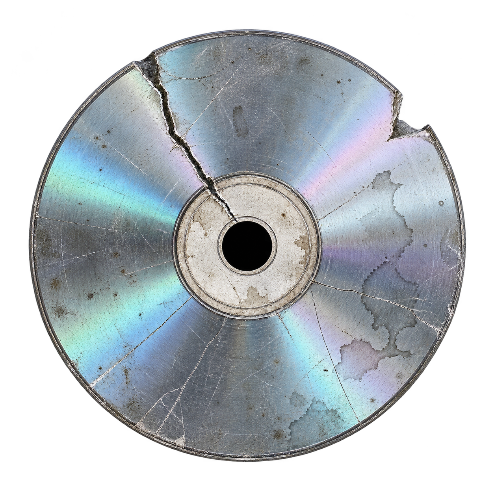

++++
FILE 01 / 05
DOHA
잠깐만 더 여기 있어.
A little closer.

SEIZE · 1st Mini Album
CD를 넣으면 음악을 들을 수 있어요.
잠깐만 더 여기 있어.
A little closer.같은 멤버 카드 두 장을 찾으면 사진 기록이 돌아옵니다.

컨셉 포토 폴더가 열렸습니다.
멤버 소개 창에서 기억 카드를 모두 맞추면 열립니다.

흩어진 악보 조각 25개를 제자리로 돌려놓으세요. 조각 두 개를 차례로 누르면 자리가 바뀝니다.

ORIGINAL / 00:00조각을 누른 뒤 바꿀 조각을 누르세요. 키보드는 방향키로 이동하고 Enter로 선택합니다.
마지막 음표가 이어지자 바탕화면에 비밀 폴더가 나타났습니다.
Is this really the first time?
SEIZE / FIRST¿
이 컴퓨터에 보관된 지역 기사입니다.
Loading...
알 수 없는 파일을 복구했습니다.
기록 위치를 확인할 수 없습니다.
종료할 수 없습니다.
아직 닫히지 않은 기록이 있습니다.
알 수 없는 신호가 감지되었습니다.
기록이 다른 창으로 복제되고 있습니다.

SEIZE / UNKNOWN RECORDING화면 밖까지 넘쳐온 노래. 첫 번째 노래가 끝난 뒤에도, 누군가의 목소리가 남아 있었다.